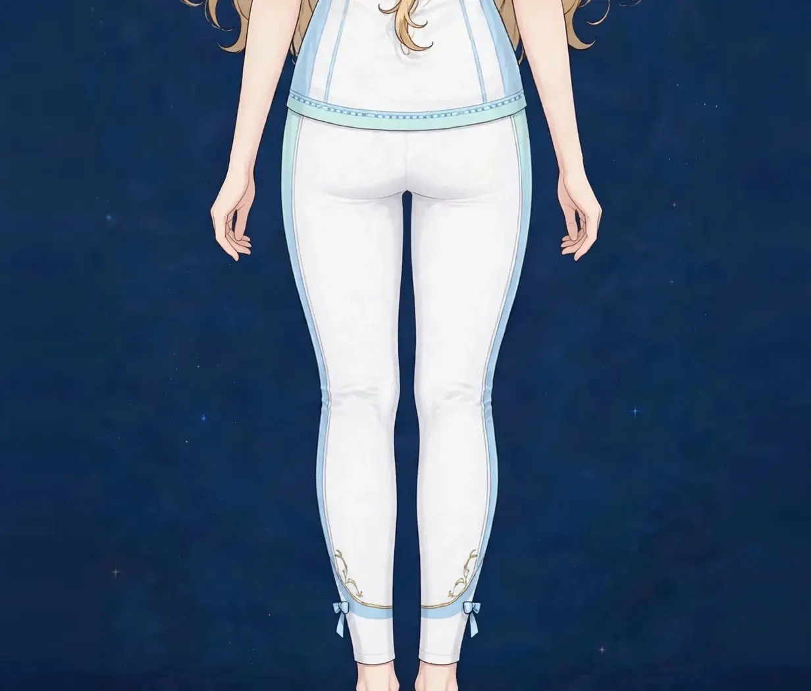

梅田で反り腰ケア｜美容整体でお腹の出方と腰のラインにアプローチ｜ステラポラリス 梅田・女性専用美容・見た目
腰が反ってお腹が前に出て見える、ヒールを履くと腰が張る——反り腰は、姿勢タイプの中でもお腹の見え方に直結する悩みです。当店の「姿勢の解説」では分類として扱いましたが、このページでは見た目と負担感に絞って解説します。
反り腰はどんな姿勢か
反り腰は、骨盤が前に傾き、腰の反り（前弯）が強くなった姿勢を指す言葉です。横から見ると、お腹が前へ出て、お尻が後ろへ突き出たラインになります。姿勢評価の分類では、背中の後弯と腰の前弯の両方が強いタイプに重なることがあります。
この姿勢では、腰の後ろ側の筋肉が縮んで張りやすく、お腹側の支えは抜けやすくなります。そのため「腰が張る」と「お腹が出る」が同時に起こります。図1のように横から見たラインで眺めることが、反り腰の見方の基本です。詳しい分類は「姿勢の解説」のページもあわせてご覧ください。
自分の反りの程度を知るには、姿勢の解説ページで紹介している壁チェックが役立ちます。腰の後ろのすき間に手のひらがすっぽり入るようなら、反りは強めの可能性があります。数値で測るものではありませんが、ケアの前後で比べる目安になります。
こんなサインはありませんか？ — 反り腰のチェックリスト
- 横から見るとお腹が前に出ている
- 仰向けで寝ると腰の下に手がすっぽり入る
- ヒールを履くと腰が張る
- お尻が突き出て見える気がする
- 太ももの前側が張っている
- 腰の後ろが慢性的に重い
- お腹に力を入れる感覚が分かりにくい
- まっすぐ立つと腰を反らしてしまう
当てはまる項目が多いほど、骨盤の傾きと腰まわりの使い方に偏りが集まっている可能性があります。次の「要因」と見比べて、自分のパターンを確かめてみてください。
反り腰につながりやすい要因
- 太ももの前側と股関節の張り：太ももの前側や股関節の前が張って短くなると、骨盤は前に引っ張られます。反り腰の引き金として最も多い要因です。
- お腹の支えの弱さ：お腹まわりの筋肉が働きにくいと、骨盤の前傾を支えられず、腰の反りに頼る姿勢になります。
- 腰の後ろ側の張り：反った姿勢では、腰の後ろの筋肉は縮んだまま働き続けます。張りが固定されると、反りを戻す動き自体がしにくくなります。
- ヒールのある靴：かかとが上がる靴では重心が前へ移り、バランスを取るために腰が反りやすくなります。履く時間が長い方ほど影響します。
- 立ち方のクセ：お腹を突き出して立つ、片足に体重をかけて腰を反らせるといった立ち方は、反り腰を固定します。
- 妊娠・出産の経験：妊娠中はお腹の重さで反り腰になりやすく、そのクセが出産後も残ることがあります。産後のページもあわせてご覧ください。
図1｜側面から見た反り腰のライン

東洋医学から見た考え方
東洋医学では、腰は腎と関わりの深い場所とされ、腰まわりの張りや重さは、疲れや冷えの蓄積の表れとして見立てられることがあります。腰の中央には督脈が通り、両脇には膀胱経が流れます。
反り腰の見立てでは、前に張る太もも側の胃経や脾経のラインと、後ろで縮む膀胱経のラインの前後のバランスを眺めます。施術では、前側をゆるめ、後ろ側の張りをほぐし、お腹の支えを取り戻す進め方を取ります。
代表的なツボ
反り腰のケアでよく挙げられるツボを紹介します。腰は自分で押しにくいため、テニスボールや温めるケアも取り入れやすい方法です。
図2｜反り腰で負担が集まる部位（側面）
おすすめ施術
美容整体・オイルマッサージ
施術では、まず太ももの前側と股関節の前の張りをオイルマッサージでほぐし、骨盤を前に引っ張る力をゆるめます。そのうえで美容整体で、腰まわりの張りとお腹の支えの使い方に触れながら、骨盤の傾きのバランスを整えていきます。
お腹を使う呼吸の練習も一緒に行い、反りに頼らない支え方を確認します。お腹の出方が整って見えるようアプローチするには、前をゆるめることと、支えを取り戻すことの両方が必要です。
施術の前後では、横からの姿勢と腰の下のすき間を一緒に確認します。姿勢の解説ページで紹介した壁チェックも、自宅で続けられる方法としてお伝えします。
自宅でできるセルフケア
反り腰のセルフケアは「前側を伸ばす・お腹の支えを使う・腰をゆるめる」の組み合わせが基本です。痛みやしびれが出る場合は無理をせず中止し、続く場合は医療機関にご相談ください。
- 1．太ももの前側ストレッチうつ伏せや立位で、かかとをお尻へ近づけて太ももの前を伸ばします。左右30秒ずつ。反り腰の引き金をゆるめる基本の動きです。
- 2．お腹を使う呼吸仰向けで膝を立て、お腹に手を当てて、吐くときにお腹を薄くする呼吸を5回。腰の反りに頼らない支えの練習です。
- 3．骨盤の前後ゆらし仰向けで骨盤を前後にゆっくり傾け、反りの位置と中間の位置の感覚を確かめます。力まず、小さな動きで行ってください。
- 4．腰の後ろを温める蒸しタオルや入浴で腰まわりを温めます。縮んで張った筋肉をゆるめる、続けやすいケアです。
図3｜腰の後ろの張りと骨盤

場面別の注意
ヒールを履く日
重心が前へ寄る日は、帰宅後に太ももの前側のストレッチを。腰の反りをためない、その日のうちのリセットが大切です。
立ち仕事の日
お腹を突き出す立ち方が続くと反りが固定されます。時々骨盤の位置を確かめ直し、両足均等に立つ意識を持ってください。
仰向けで寝にくい日
腰が浮いて寝にくい日は、膝の下にクッションを入れて腰の反りを和らげる工夫を。寝姿勢も反り腰のケアの一部です。
受診の目安
次のような場合は、サロンでのケアの前に医療機関への受診をおすすめします。
- 腰の痛みに加えて、脚にしびれや力の入りにくさがある
- 痛みが日に日に強くなっている
- 発熱や体重の急な減少を伴っている
- 転倒や事故のあとから痛みが出てきた
- 排泄の異常など、いつもと違う症状がある
当店は医療機関ではなく、診断は行いません。迷うときは、まずかかりつけの医療機関にご相談ください。
よくある質問
Q．「姿勢の解説」のページと何が違いますか？
あちらは姿勢タイプ全体の分類と見分け方の解説、こちらは反り腰に絞って、お腹の出方や腰の負担感といった見た目と感覚の面から扱います。あわせて読むと理解が深まります。
Q．反り腰は姿勢を正せば戻りますか？
意識して正すだけでは、張りのバランスが変わらず戻りやすいものです。施術で前後の張りを整え、セルフケアで支え方を身につける組み合わせが、無理のない進め方です。
Q．くびれのページと関係しますか？
はい。反り腰はお腹の出方の大きな要因です。「くびれ・ぽっこりお腹」のページとあわせてご覧ください。当日は両方の視点で組み立てることもできます。
Q．腰痛があるときも受けられますか？
強い痛みやしびれがある場合は、まず医療機関への受診をおすすめします。痛みが落ち着いている時期の、張りをほぐすケアは可能です。当日の状態をうかがって判断します。
関連するお悩みページ
関連する経絡ページ
ご予約
ステラポラリス（大阪・梅田／女性専用）｜美容整体・オイルマッサージ 90分 10,000円｜月〜土 17:00〜22:00・完全予約制
ご予約はLINE公式アカウントで受け付けています。希望の日時と、気になる場所を送ってください。